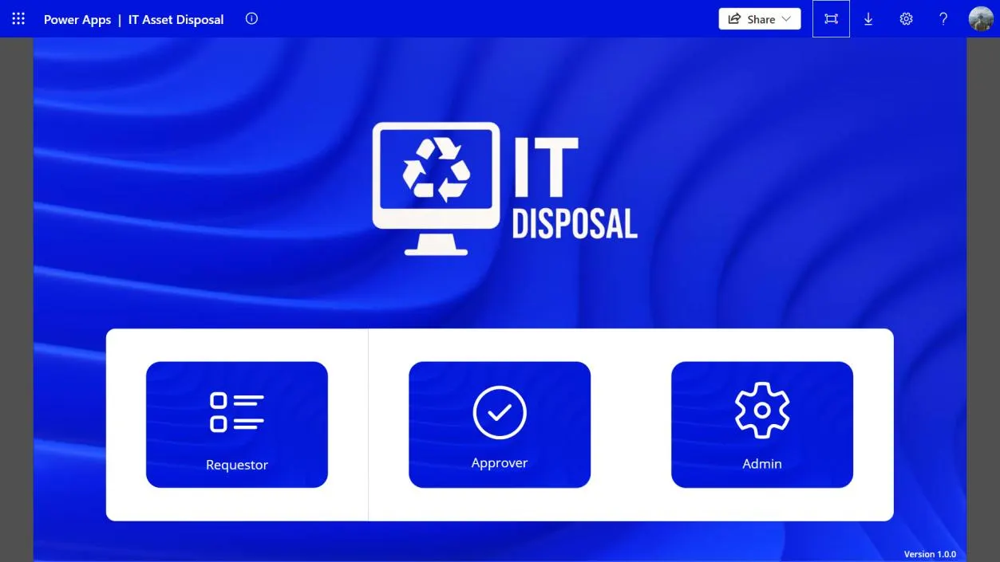
10 Nov 2026 · InternshipTry the IT Asset Disposal appClick through all 26 screens of the Power App, in the order a case moves through it.
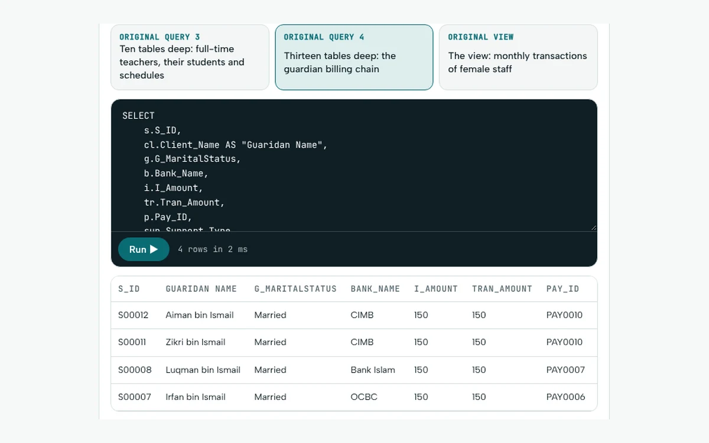
7 Nov 2026 · CourseworkJom Al-Quran: 56 tables, back from OracleA tuition business database, rebuilt and runnable, with the original diagram, a join map and a critical review.
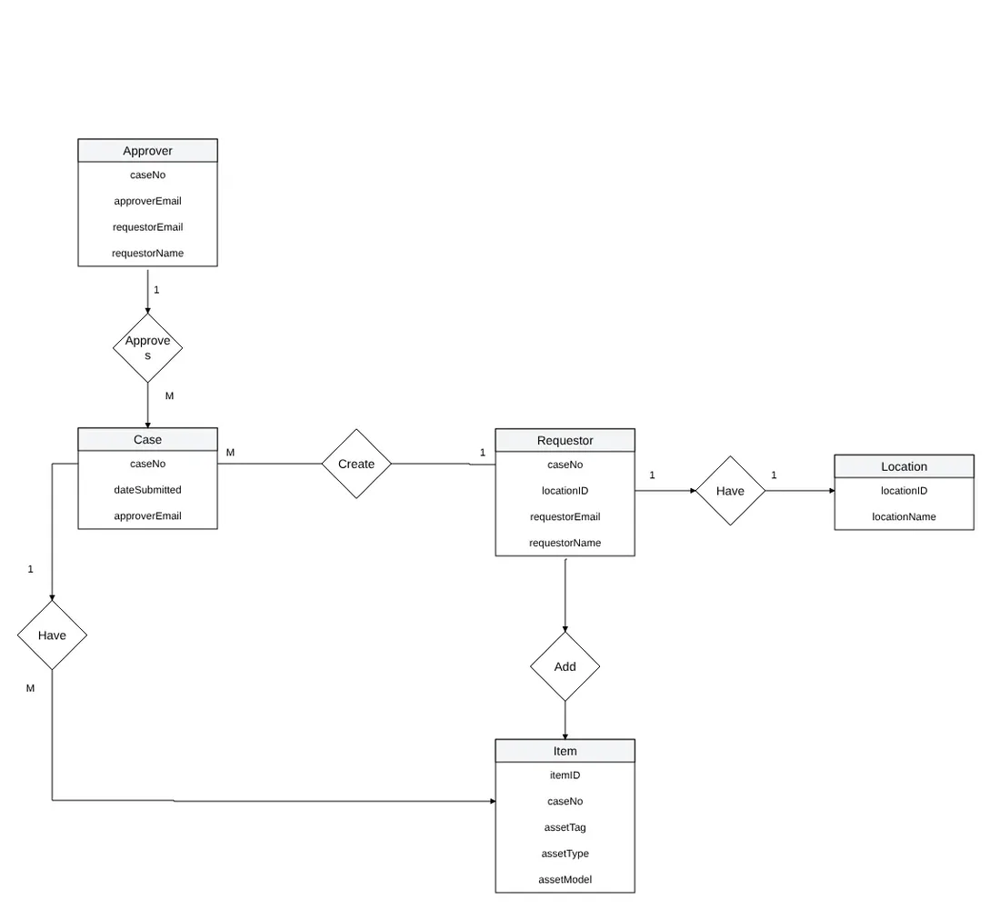
6 Nov 2026 · InternshipNine charts before one screenThe flowcharts, ERDs and data model behind the SLB disposal app.
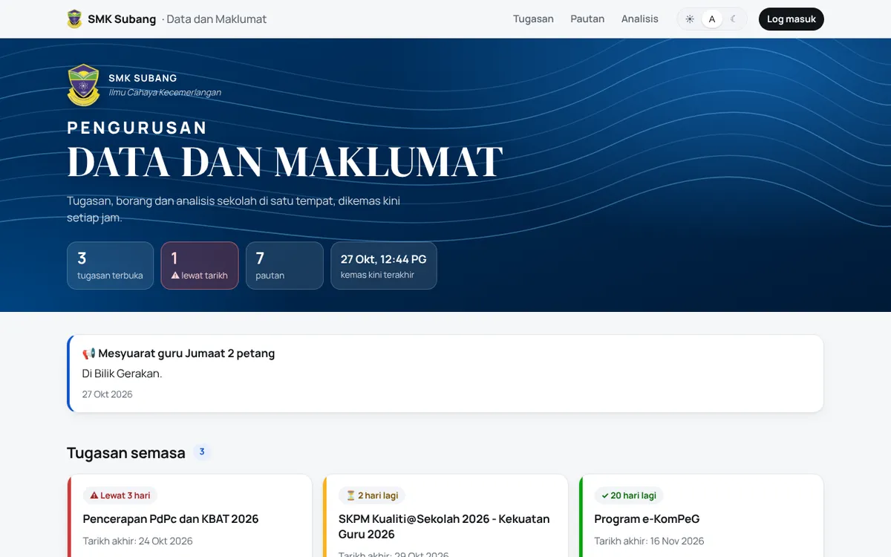
6 Nov 2026 · Side projectA dashboard 150 teachers actually openReplacing a school's link page and spreadsheet, with privacy at every layer.
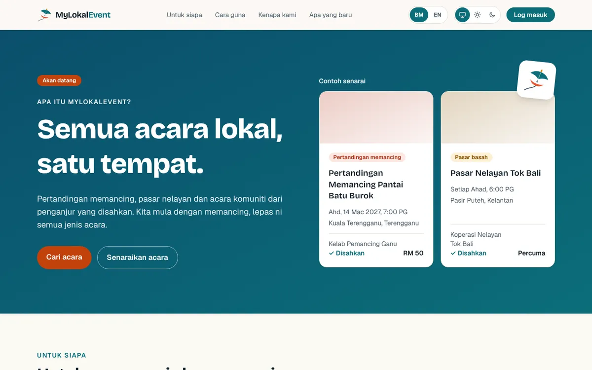
6 Nov 2026 · RebuildFrom coursework to something people could trustSecurity, payments, a design system and BM first.
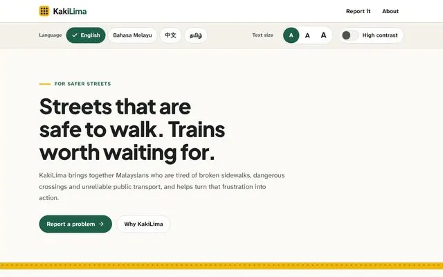
6 Nov 2026 · Side projectAccessible first, in four languagesText size, high contrast and one set of tokens for every theme.
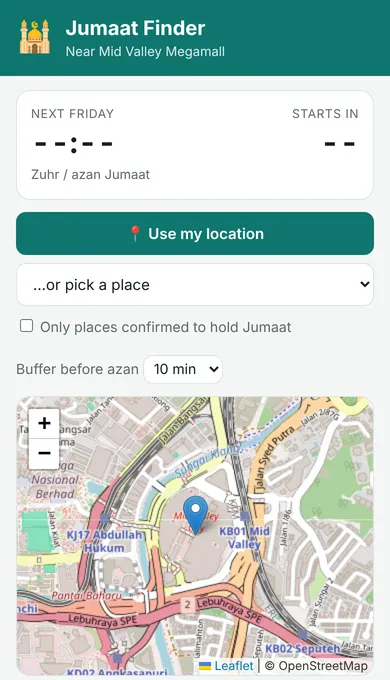
6 Nov 2026 · Side projectWhere can I solat Jumaat from here?565 official places, prayer times and a leave-by time.
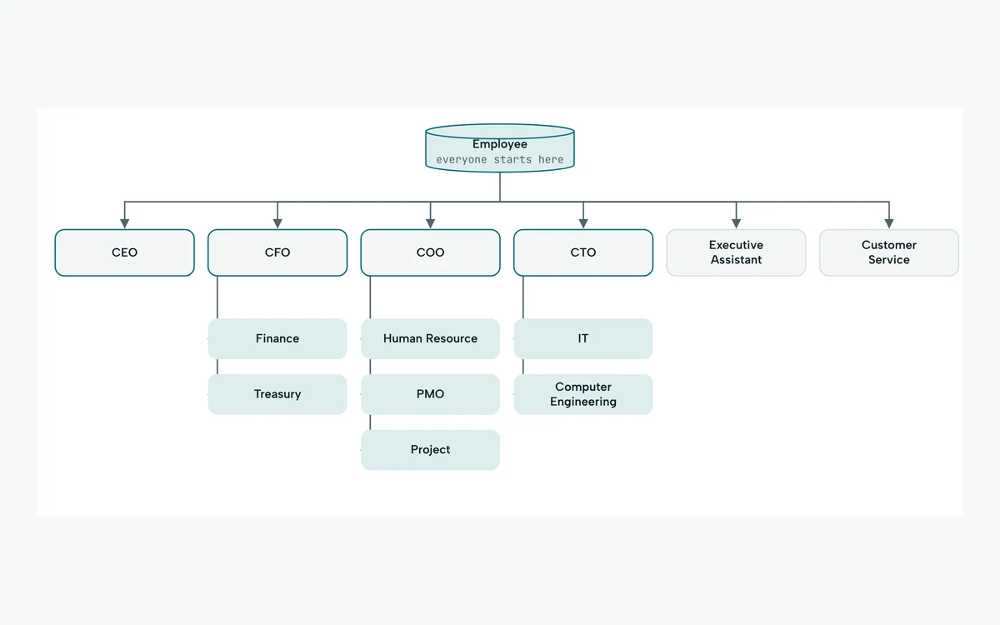
6 Nov 2026 · CourseworkA whole company in 49 tablesA company database from the CEO down, with a live SQL playground.
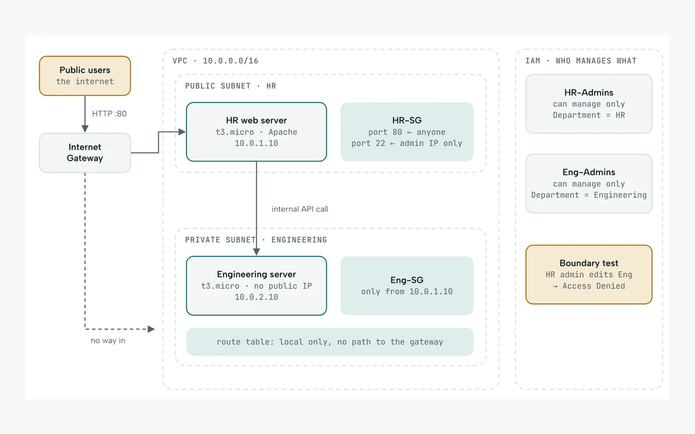
6 Nov 2026 · CourseworkOne VPC, two departments, $56Where my AWS started: three layers of isolation in a $100 credit.
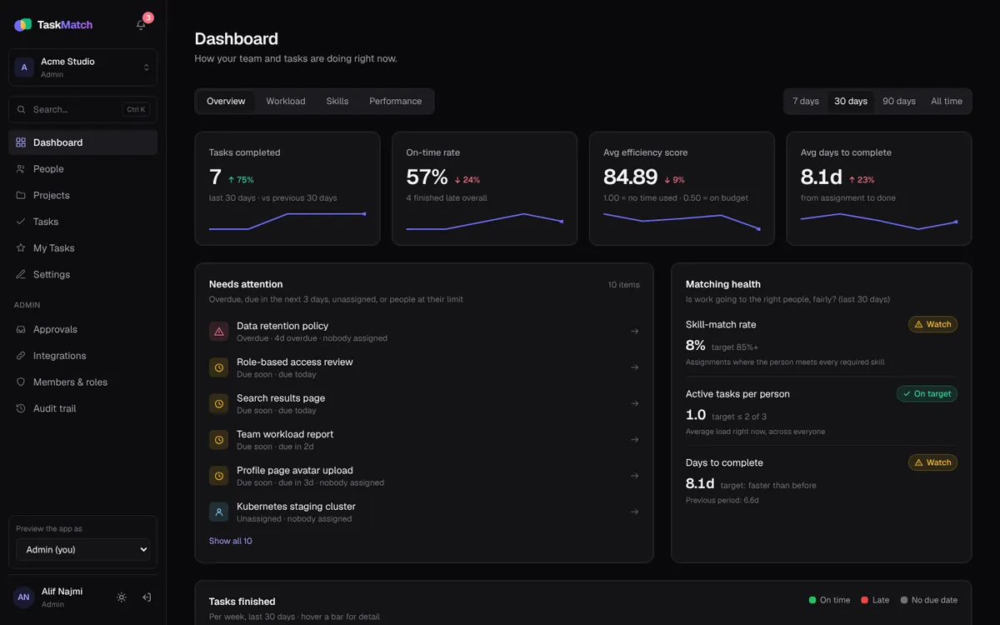
5 Nov 2026 · RebuildRebuilding my FYP properlyTaskMatch, from final year project to production standard.
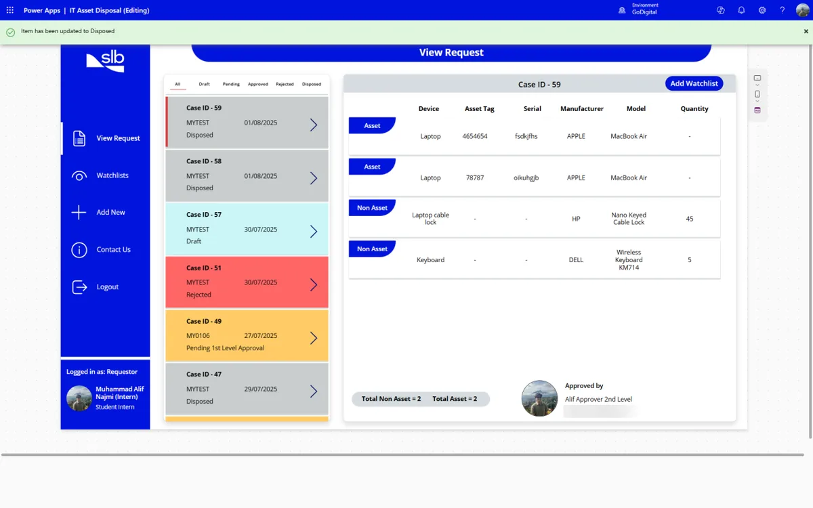
4 Nov 2026 · InternshipFrom reply-all to Power AppsReplacing an Excel and email-chain process at SLB.
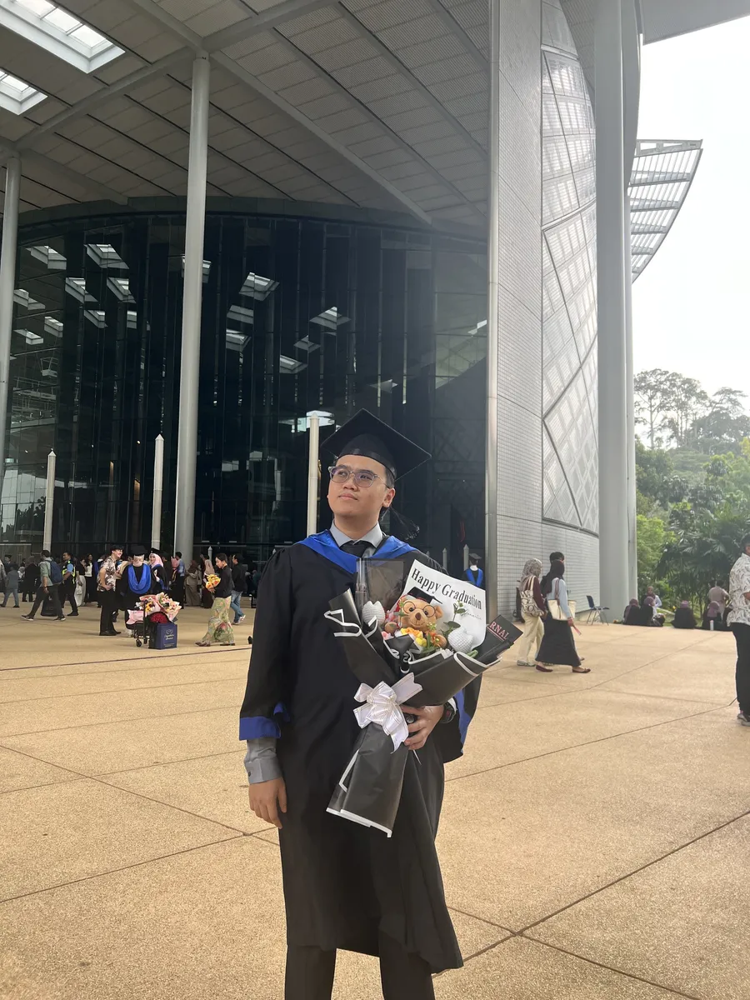
3 Nov 2026 · LifeFour years, one walk across the stageGraduating from UTP.